gs.mapcalc("output = input")Basics of map algebra
tutorial
grass
python
Learn the basics of map algebra in GRASS including arithmetic, functions, and logic. Use map algebra to model a landscape.
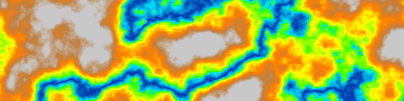
NoteComputational notebook
This tutorial can be run as a computational notebook. Learn how to work with notebooks with the tutorial Get started with GRASS & Python in Jupyter Notebooks.
Introduction
This tutorial is a gentle introduction to the basics of map algebra in GRASS. You will begin to learn how to think procedurally about space using math, logic, and flow control. Map algebra is an algebraic approach to modeling fields of data such as rasters. It can be used to create, summarize, transform, or combine multiple rasters. Algebraic operations on raster maps can be classified as local, focal, zonal, or global. Local operations act on each raster cell in isolation. Focal operations act on a neighborhood around each cell. Zonal operations act on groups of cells. Global operations act on all cells in the raster. While there are many tools for map algebra in GRASS, this tutorial focuses on local algebraic operations using the raster map calculator r.mapcalc. It also briefly introduces focal operations with r.neighbors, zonal operations using conditional statements with r.mapcalc, and global operations with r.info.
| Types | Scope | Tools |
|---|---|---|
| Local | Each cell individually | r.mapcalc, r.mapcalc.simple, r.series, etc… |
| Focal | Each cell and its neighborhood | r.mapcalc, r.neighbors, r.mfilter, etc… |
| Zonal | Groups of cells | r.mapcalc, r.clump, r.univar, r.stats.zonal, etc… |
| Global | All cells | r.info, r.univar, r.stats, r.report, etc… |
Raster Calculator
The raster map calculator r.mapcalc uses map algebra expressions to transform rasters. The left side of the expression is the output raster map, while the right side is the input syntax including rasters, operators, functions, and variables. The raster map calculator can be run from the graphical user interface (GUI), from the command line, or with Python.
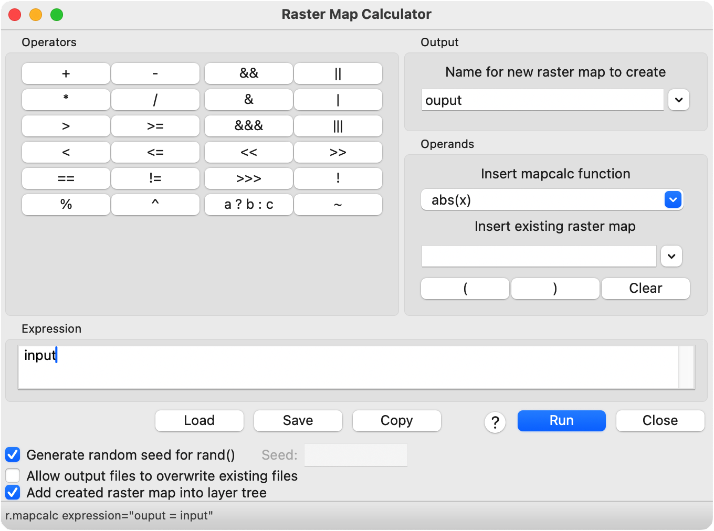
r.mapcalc expression="output = input"The raster calculator can be used for the simplest of tasks such as copying rasters, creating constant rasters, scaling rasters, patching rasters together, or adding rasters together. It can also be used for more sophisticated tasks such as normalizing rasters, processing imagery, calculating vegetation indices, implementing mathematical models, and generating synthetic data. In this tutorial, we will use map algebra to generate terrain with mountains, valleys, weathering, forest, plateaus, and rivers. We will use the following operators, functions, and internal variables:
| Operator | Syntax |
|---|---|
| Addition | + |
| Division | \ |
| Greater than | > |
| Less than | < |
| Function | Syntax |
|---|---|
| Absolute value | abs(x) |
| Random | rand(a,b) |
| If | if(x) |
| If then else | if(x,a,b) |
| Variable | Syntax |
|---|---|
| Null | null() |
Setup
Start a GRASS session in a new project with a Cartesian (XY) coordinate system. Use g.region to set the extent and resolution of the computational region. Since we are working in a Cartesian coordinate system, we can simply create a region starting at the origin and extending two hundred units north and eight hundred units east.
g.region n=200 e=800 s=0 w=0 res=1# Import libraries
import os
import sys
import subprocess
from pathlib import Path
# Find GRASS Python packages
sys.path.append(
subprocess.check_output(
["grass", "--config", "python_path"],
text=True
).strip()
)
# Import GRASS packages
import grass.script as gs
import grass.jupyter as gj
# Create a temporary folder
import tempfile
temporary = tempfile.TemporaryDirectory()
# Create a project in the temporary directory
gs.create_project(path=temporary.name, name="xy")
# Start GRASS in this project
session = gj.init(Path(temporary.name, "xy"))
# Set region
gs.run_command("g.region", n=200, e=800, s=0, w=0, res=1)Constants
We will be modeling a landscape, so let’s start with the simplest of landforms - a flat plain. We can represent a flat plain with a constant raster that has the same elevation value for every cell. It is very easy to create constant rasters like this with map algebra. We will use the raster map calculator r.mapcalc to create a new raster with a constant value of zero, representing flat terrain at mean sea level. In the raster map calculator, simply write the expression elevation=0 to create a new elevation raster set to a constant height of zero.
r.mapcalc expression="elevation = 0"# Map algebra
gs.mapcalc("elevation = 0")
# Visualize
m = gj.Map(width=800)
m.d_rast(map="elevation")
m.show()Fractals
Now let’s model more interesting mountainous terrain as a base for the rest of the tutorial. Use r.surf.fractal to generate a fractal surface that simulates mountainous terrain. If you want reproducible results, set a seed. Find the height of the mountains by printing the elevation range with r.info. This report is an example of a global map algebra operation that acts on the entire raster.
r.surf.fractal output=fractal dimension=2.25
r.info -r map=fractal# Generate fractal surface
gs.run_command("r.surf.fractal", output="fractal", dimension=2.25)
# Visualize
m.d_rast(map="fractal")
m.d_legend(raster="fractal", at=(5, 95, 1, 3))
m.show()
# Print range
info = gs.read_command("r.info", map="fractal", flags="r")
print(info)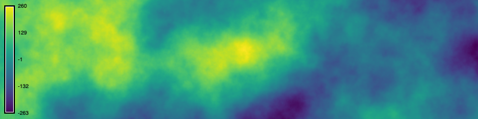
Arithmetic
Operations
Next let’s try arithmetic with map algebra. Since our fractal mountains are too high, rescale them with the raster map calculator r.mapcalc. Write the expression elevation = fractal / 10 to create a new elevation raster equal to the fractal surface divided by ten. This is a local map algebra operation using simple arithmetic. Print the rescaled elevation range with r.info.
r.mapcalc expression="elevation = fractal / 10"
r.colors map=elevation color=elevation
r.info -r map=elevation# Map algebra
gs.mapcalc("elevation = fractal / 10")
gs.run_command("r.colors", map="elevation", color="elevation")
# Visualize
m.d_rast(map="elevation")
m.d_legend(raster="elevation", at=(5, 95, 1, 3))
m.show()
# Print range
info = gs.read_command("r.info", map="elevation", flags="r")
print(info)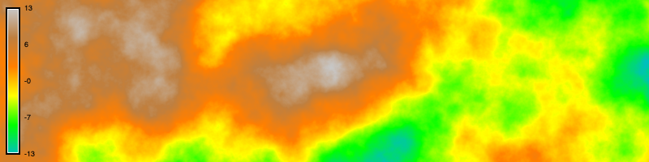
Functions
Map algebra has arithmetic functions as well as operators. Let’s take the absolute value of our terrain to model river valleys winding through our fractal mountains. In the raster map calculator r.mapcalc, write the expression elevation = abs(elevation) to create a new elevation raster equal to absolute value of the fractal surface. Because our fractal terrain has values both below and above mean sea level, i.e. zero, taking its absolute value will raise the low-lying valleys into mountains. The elevation gradient close to zero will become river valleys at the feet of the mountains. Use r.colors to assign a color gradient to the elevation raster, ensuring that the gradient fits the rescaled elevation range of the raster.
r.mapcalc expression="elevation = abs(elevation)" --overwrite
r.colors map=elevation color=elevation# Map algebra
gs.mapcalc("elevation = abs(elevation)", overwrite=True)
gs.run_command("r.colors", map="elevation", color="elevation")
# Visualize
m.d_rast(map="elevation")
m.d_legend(raster="elevation", at=(5, 95, 1, 3))
m.show()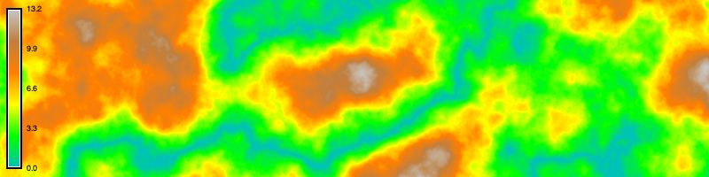
Neighborhoods
Let’s try a focal map algebra operation that acts on a neighborhood of cells. The easiest way to do this is with nearest neighbors analysis with r.neighbors, but it can also be done by defining a moving window for r.mapcalc. Use r.neighbors to smooth the elevation raster, simulating the weathering of old mountains. Set the input raster to our elevation raster, the output raster to a new weathering raster, the neighborhood size to 9, the method to average, and flag c for a circular neighborhood. This will create a circular moving window nine pixels wide that moves from cell to cell across the raster. The moving window will calculate the average value of the neighborhood of cells around each cell, smoothing the raster. The size of the moving window, which must be an odd integer value of three or greater, determines the degree of smoothing.
r.neighbors -c input=elevation output=weathering size=9# Nearest neighbors
gs.run_command(
"r.neighbors",
input="elevation",
output="weathering",
size=9,
method="average",
flags="c",
overwrite=True
)
# Visualize
m.d_rast(map="weathering")
m.d_legend(raster="weathering", at=(5, 95, 1, 3))
m.show()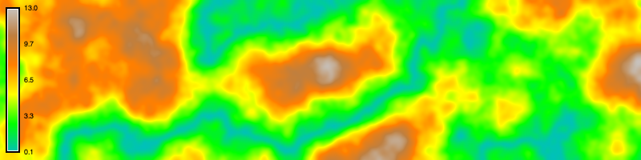
Randomness
We can use map algebra to inject randomness in our raster data. Use the raster map calculator r.mapcalc to generate a random surface, simulating the height of the forest canopy. Write the expression random = rand(0.0, 10.0) to create a new random raster with random floating point values between zero and ten assigned to each cell. For easily reproducible results, set a fixed seed for the pseudo-random number generator.
r.mapcalc expression="random = rand(0.0, 10.0)" seed=0# Generate random surface
gs.mapcalc("random = rand(0.0, 10.0)", seed=0)
# Visualize
m.d_rast(map="random")
m.d_legend(raster="random", at=(5, 95, 1, 3))
m.show()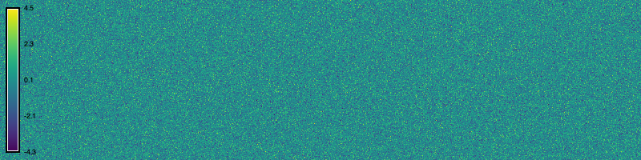
Use the raster map calculator r.mapcalc to add the height of the forest canopy to the elevation gradient, simulating the forested terrain. Write the expression forest = elevation + random to create a new raster equal to the sum of the elevation raster and the random surface. This is a local map algebra operation using basic arithmetic between two rasters.
r.mapcalc expression="forest = elevation + random"# Map algebra
gs.mapcalc("forest = elevation + random")
# Visualize
m.d_rast(map="forest")
m.d_legend(raster="forest", at=(5, 95, 1, 3))
m.show()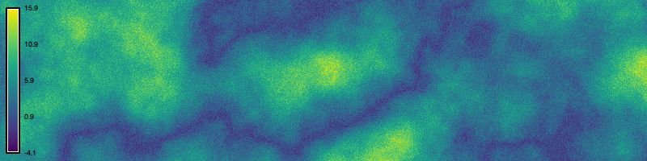
Logic
We can use logical statements in map algebra that test whether given conditions are true or false. In the raster map calculator, we can use the function if(x,a,b) to evaluate if cells meet condition x, then do a, else do b. In this tutorial, we will use if then else statements to model plateaus and rivers.
| Logical Operator | Syntax |
|---|---|
| Greater than | > |
| Less than | < |
| Greater than or equal | >= |
| Less than or equal | <= |
| Equal | = |
| Not equal | != |
| Logical and | && |
| Logical or | || |
If statements
Let’s use logic in map algebra to transform the mountain peaks into plateaus. First use the raster map calculator r.mapcalc with an if statement to find all cells with an elevation above thirty. Write the expression plateaus = if(elevation > 30). Simple if statements with the form if(x) - where x is an equality or inequality statement - return a raster with ones where the statement is true and zeros where it is false. So this expression will return a new raster with ones where the plateaus will be and zeros elsewhere. This is a zonal map algebra operation using logic to isolate a zone of cells.
r.mapcalc expression="plateaus = if(elevation > 30)"# Map algebra
gs.mapcalc("plateaus = if(elevation > 30)")
# Visualize
m.d_rast(map="plateaus")
m.show()If then else statements
Now use the raster map calculator r.mapcalc to model the plateaus using an if then else statement. In map algebra, the syntax for these logical statements is if(x, a, b) where if the relational statement x is true, then do a, else do b. Write the expression elevation = if(elevation > 30, 30, elevation). All cells with elevation values greater than 30 will be assigned a value of 30, while all other cells will keep their original values. This will flatten all of the mountain peaks above the threshold of 30, forming plateaus.
r.mapcalc expression="elevation = if(elevation > 30, 30, elevation)" --overwrite
r.colors map=elevation color=elevation# Map algebra
gs.mapcalc("elevation = if(elevation > 30, 30, elevation)", overwrite=True)
gs.run_command("r.colors", map="elevation", color="elevation")
# Visualize
m.d_rast(map="elevation")
m.d_legend(raster="elevation", at=(5, 95, 1, 3))
m.show()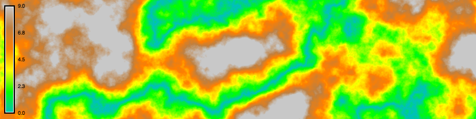
Complex expressions
Use map algebra to model a river that fills the valleys. With the raster map calculator r.mapcalc write the expression river = if(elevation < 6, 6 - elevation, null()) to simulate the depth of the river. This is a more complicated map algebra expression that combines logic with an if then else statement, arithmetical operations between rasters, and the internal variable null(). If cells in the elevation raster have values less than six, then they will be assigned the difference between six and the elevation raster, else they will be assigned null values. Then use r.colors to assign the water color gradient to the river raster. The null cells will be transparent, so the river depth raster can be layered over the elevation raster.
r.mapcalc expression="rivers = if(elevation < 6, 6 - elevation, null())"
r.colors map=rivers color=water# Map algebra
gs.mapcalc("rivers = if(elevation < 6, 6 - elevation, null())")
gs.run_command("r.colors", map="rivers", color="water")
# Visualize
m.d_rast(map="elevation")
m.d_rast(map="rivers")
m.d_legend(raster="rivers", at=(5, 95, 1, 3))
m.show()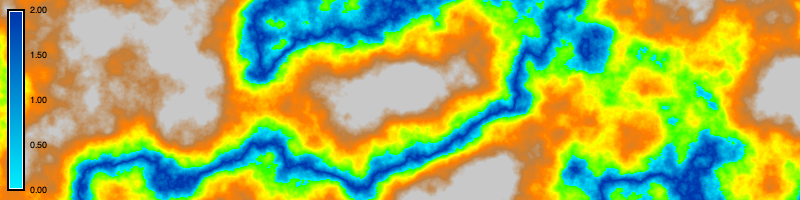